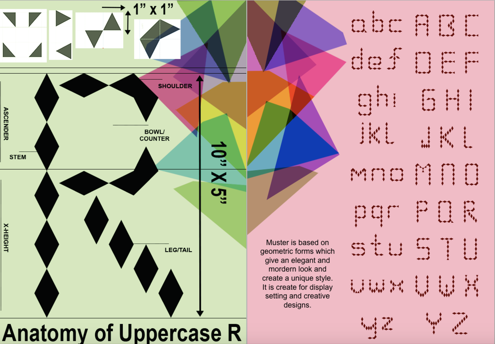
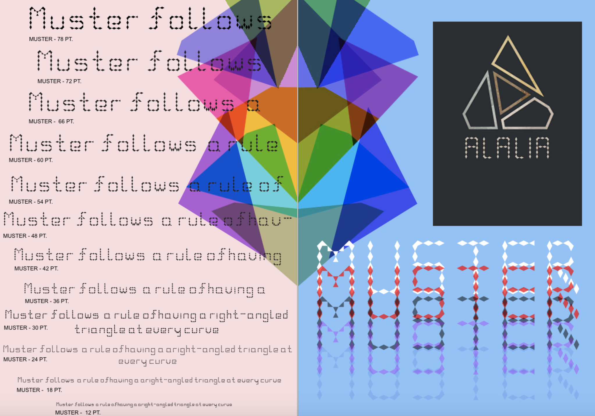

This piece was made for my Core Studio typography class last semester. I created my own typeface using Fontstruct. The Pattern of my typeface consists of triangles joining at the baseline or flat edge of each shape forming the stems within a modular structure. I was influencd by the Bauhaus movement following their idea of simplicity and legibility. Another major factor influencing my work was the artist Wolf Weigert, a particular piece displayed a pattern made up within the shape of a circle, which gave me the idea of creating one letter out of several smaller shapes. The name Muster, came from the German translation of ‘Pattern’. The Bauhaus and Weingart both originate from Germany, so I felt it necessary to incorporate my main influences into the title of the font.
